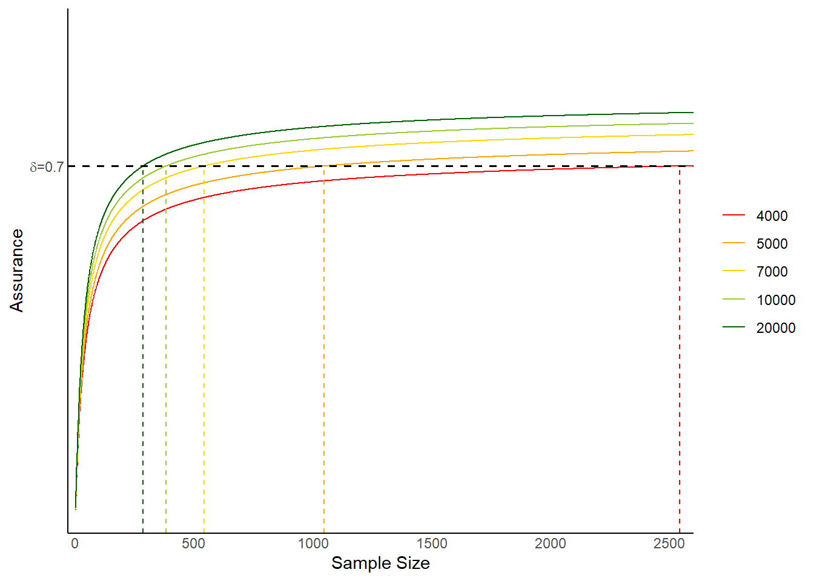

![]()

Bayesian Inference in Clinical Trials of Cost-Effectiveness
Quarto
R
Academia
Medical Statistics
Sample Size Calculation
Bayesian Statistics
Sample size calculation in CEA
Hello dear readers and welcome back to a new post on this blog. As I promised last time, today we are going to take a break from the classical introductory statistic topics, which were discussed in the past few posts, and instead go back to the usual health economic core topics that are dear to me. In fact, today I would like to combine (for what is possible) some aspects of sample size calculation approaches, which we already introduced in one past post, and Bayesian inference, which covers a particularly important role within cost-effectiveness analysis (CEA).
Apart from representing a nice bridge between two very appealing aspects of my research work, I have also been recently involved in a research project on this topic. The project is still at its early stages but there is a great potential what the type of output and contribution which may come out of it. Under the wave of this new enthusiasm for this topic, I wanted to use this blog an excuse to review some of the key concepts related to this. For doing this, and specifically throughout today’s post, I took strong inspiration from O’Hagan and Stevens (2001), who represents a key reference on the topic. Today, I will attempt to provide a concise summary of what the authors discussed in a way that can be (hopefully) relatively easy to follow.
Introduction
Analyses of power considerations and the choice of sample size have been published both in the context of subsequent analysis based on incremental cost-effectiveness ratios and net benefits formulations. All of these methods are based on the classical approach of frequentist statistics, although, in principle, it is possible to give a novel alternative solution using Bayesian statistics to provide a more flexible framework for considering both “power” and sample size.
Suppose that the study to be designed will comprise a randomised clinical trial in which \(n_1\) patients are given treatment \(1\) and \(n_2\) are given treatment \(2\), which must be determined under some suitable specification of model and study objectives. We assume that the data will yield a measure of efficacy and a cost for each patient, and we denote the observed efficacy for patient \(j\) given treatment \(i\) by \(e_{ij}\), whereas the cost for that patient is denoted by \(c_{ij}\), for \(i=1,2\) and \(j=1,\ldots,n_i\). The population mean efficacy and cost under treatment \(i\) is given by the expectation \(\text{E}(e_{ij})=\mu_i\) and \(\text{E}(c_{ij})=\gamma_i\), respectively.
An important input to a sample size assessment is the population variances, \(\text{Var}(e_{ij})=\sigma^2\) and \(\text{Var}(c_{ij})=\tau^2\), since these determine the amount of information provided by a single observation, while also allowing for statistical dependence between the efficacy and cost measures through a correlation parameter \(\text{Corr}(e_{ij},c_{ij})=\rho_i\). Suppose that the objective of the study is to demonstrate that treatment \(2\) is more cost-effective than treatment \(1\) if this is the true situation. Let the true (population) mean increment of efficacy and cost for treatment \(2\) compared with treatment \(1\) be \(\Delta_e=\mu_2-\mu_1\) and \(\Delta_c=\gamma_2-\gamma_1\). The cost-effectiveness assessment will be based on the net monetary benefit
\[ \beta = K\times \Delta_e - \Delta_c \]
of changing from treatment \(1\) to treatment \(2\), where \(K\) is the threshold unit cost representing the maximum price (in appropriate monetary units) that the health care provider is prepared to pay to obtain a unit increase in efficacy. Treatment \(2\) is more cost-effective than treatment \(1\) if \(\beta>0\).
Problem Formulation
It is helpful to recognize two stages in the specification and solution of a sample size problem: the analysis objective and the design objective.
The analysis objective specifies what we hope to achieve as a positive outcome of the analysis of whatever data are obtained in the study. Whether the analysis objective is achieved in practice depends on the data that we will obtain. In general, increasing the sample size produces stronger inferences and thereby a better chance of achieving a positive outcome.
The design objective specifies in some sense how sure we wish to be of achieving the analysis objective.
In the cost-effectiveness situation, a positive outcome would be to demonstrate that treatment \(2\) is more cost-effective than treatment \(1\) by rejecting the null hypothesis of no difference with a P value less than or equal to \(\alpha\), where a smaller \(\alpha\) value implies a more stringent objective that will be harder to achieve and thus will require a larger sample size. The frequentist design objective has two components. First, we specify a true effect that we suppose holds, and in the present context this amounts to specifying a true net monetary benefit \(\beta=\beta_0\). Then, we specify the power \(\pi\) that we require to have for detecting this supposed true effect, i.e. the probability of achieving the desired analysis objective (of rejecting the null hypothesis) if the true net monetary benefit is \(\beta\). In the standard frequentist paradigm, the analysis objective determines the critical region of the test, followed by the choice of the sample size to obtain the desired probability (power) for the data to fall in the critical region.
Bayesian solutions similarly have these two stages:
The analysis objective regards the outcome of the study as positive if the data obtained are such that there is a posterior probability of at least \(\omega\) that \(\beta>0\), that is, that treatment \(2\) is more cost-effective than treatment \(1\). This Bayesian expression of the analysis objective is analogous to rejecting, at a P value of \(1-\omega\), the null hypothesis that \(\beta\leq 0\) in a one-sided frequentist significance test with alternative hypothesis that \(\beta >0\). Increasing \(\omega\) is analogous to decreasing the frequentist significance level \(\alpha\) and has the same effect of making the analysis objective more stringent.
The design objective requires the sample size to be large enough so that there is a probability of at least \(\delta\) (assurance) of obtaining a positive result. This is analogous to the frequentist’s power \(\pi\), but with the difference that The frequentist objective requires also to specify a supposed true effect \(\beta_0\) such that a specified power \(\pi\) is achieved when the true effect is \(\beta_0\) or greater. Instead, in a Bayesian analysis, we specify a prior distribution for the unknown parameters, including \(\beta\). The Bayesian assurance \(\delta\) is a kind of average power, averaged over this prior distribution for \(\beta\).
Prior Information
When considering a Bayesian method, it is often instructive to consider how one might obtain the same results as the standard frequentist solution to the same problem. Typically, the two approaches become broadly equivalent if, in the Bayesian method, we specify very weak prior information. Thus, if we specify very weak prior information about the parameters in the model, the posterior distribution will be based almost entirely on the evidence in the data. We will then find that the Bayesian posterior probability \(1-\omega\) that \(\beta\leq 0\) becomes exactly the same as the frequentist P value for the one-sided test of \(H_0: \beta\le0\) against the alternative that \(\beta >0\). While this will ensure equivalence of the two approaches at the analysis stage, this cannot hold at the design stage since, if we specify weak prior information at the design stage, then we will be allowing substantial probabilities that \(\beta\) is extremely large, making it impossible to satisfy any realistic design objective.
We define the vectors of true parameter values to be \(\boldsymbol \xi=(\mu_1,\gamma_1,\mu_2,\gamma_2)^{'}\) and \(\boldsymbol a= (-K,1,K,-1)^{'}\), so that \(\beta=\boldsymbol a^{'} \boldsymbol \xi\). Let now define the prior distributions, with the prior expectation of \(\boldsymbol \xi\) be \(\boldsymbol m_a\) according to the analysis prior and \(\boldsymbol m_d\) according to the design prior. Similarly, let the prior variance matrix of \(\boldsymbol \xi\) be \(\boldsymbol V_a\) according to the analysis prior and \(\boldsymbol V_d\) according to the design prior. We first achieve a weak prior distribution at the analysis stage by making the prior variances become extremely large, represented in the limit by \(\boldsymbol V^{-1}_a=\boldsymbol 0\). Second, the very precise prior specification at the design stage is obtained by setting \(\boldsymbol m_d\) to the assumed parameter values and \(\boldsymbol V_d=\boldsymbol 0\).
Let \(\bar{\boldsymbol x}\) denote the vector of sample means arranged in the corresponding order to the elements of \(\boldsymbol \xi\). Much of the statistical theory of cost-effectiveness analysis from clinical trial data has assumed that the sample mean costs and mean efficacies contained in \(\bar{\boldsymbol x}\) are jointly normally distributed. Even if the individual observations are not normally distributed, this is justified as an approximation in sufficiently large samples by the central limit theorem.
Derivation of Sample Size
The analysis objective leads to the following condition for a positive outcome
\[ \boldsymbol a^{'} \Big(\boldsymbol V^\star (\boldsymbol V^{-1}_a \boldsymbol m_a + \boldsymbol S^{-1}\bar{\boldsymbol x})\Big) \geq Z_{1-\omega} \sqrt{\boldsymbol a^{'}\boldsymbol V^\star\boldsymbol a}. \tag{1}\]
where the matrix \(\boldsymbol V^\star\) is the posterior variance matrix of \(\boldsymbol \xi\), given by
\[ \boldsymbol V^\star = (\boldsymbol V^{-1}_a + \boldsymbol S^{-1})^{-1}, \] where the matrix \(\boldsymbol S\) is the sampling variance matrix of \(\bar{\boldsymbol x}\) given by
\[ \boldsymbol S = \begin{pmatrix} \sigma^2_1/n_1 & \rho_1\sigma_1\tau_1/n_1 & 0 & 0 \\ \rho_1\sigma_1\tau_1/n_1 & \tau^2_1/n_1 & 0 & 0 \\ 0 & 0 & \sigma^2_2/n_2 & \rho_2\sigma_2\tau_2/n_2\\ 0 & 0 & \rho_2\sigma_2\tau_2/n_2 & \tau^2_2/n_2 \end{pmatrix} \tag{2}\]
and where \(Z_{\alpha}\) is the upper \(100\%\alpha\) percentile of the standard normal distribution. Equation 1 depends on the sample data \(\bar{\boldsymbol x}\), whose distribution depends on \(\boldsymbol S\), and hence on \(n_1\) and \(n_2\). At the design stage, we need to choose \(n_1\) and \(n_2\) so that with probability \(\delta\) we will obtain data satisfying Equation 1. In particular, \(n_1\) and \(n_2\) must be chosen to satisfy the condition
\[ \boldsymbol a^{'}\boldsymbol V^\star(\boldsymbol V^{-1}_a \boldsymbol m_a + \boldsymbol S^{-1}\boldsymbol m_d) \geq Z_{1-\omega} \sqrt{\boldsymbol a^{'}\boldsymbol V^\star\boldsymbol a} + Z_{1-\delta} \sqrt{\boldsymbol a^{'}\boldsymbol V^\star \boldsymbol S^{-1} (\boldsymbol V_d + \boldsymbol S) \boldsymbol S^{-1} \boldsymbol V^\star \boldsymbol a}. \tag{3}\]
On the right-hand side are two terms that clearly arise from the two stages of the solution. Each has the form of a normal \(Z\) significance point multiplied by a square root that corresponds to a standard error. Both standard errors will tend to decrease as the sample sizes \(n_1\) and \(n_2\) are increased. The coefficients \(Z_{1-\omega}\) and \(Z_{1-\delta}\) are determined by \(\omega\) and \(\delta\), which come from the analysis and design objectives, respectively. In particular, strengthening either objectives implies that \(\omega\) or \(\delta\) will increase, and this will in turn increase either \(Z_{1-\omega}\) or \(Z_{1-\delta}\). On left-hand side are the prior expectations \(\boldsymbol m_a\) and \(\boldsymbol m_d\) of \(\boldsymbol \xi\), according to the analysis and design priors respectively. In fact, \(\boldsymbol a^{'} \boldsymbol m_a\) and \(\boldsymbol a^{'} \boldsymbol m_d\) are the prior expectations of the net benefit \(\beta\). If we genuinely expect the net benefit of treatment \(2\) over treatment \(1\) to be large, then the left-hand side will be large, and so we do not need such a large sample size to make the right-hand side small enough to satisfy the condition. Conversely, larger sample sizes will be needed if we expect treatment \(2\) to be of marginal net benefit.
Solution of Equation 3 will in general require an iterative search. However, we should note that unless a further condition is set there will not generally be a unique solution. Two natural additional constraints are:
to require equal sample sizes in the two treatment groups via the condition \(n_1=n_2\) or
to find the solution that minimises the total sample size \(n_1+n_2\)
If the analysis prior is weak, that is, \(\boldsymbol V^{-1}_a=\boldsymbol 0\), we have \(\boldsymbol V^\star=\boldsymbol S\) and Equation 1 becomes exactly the frequentist one-sided \(100\%(1-\omega)\) test of the null hypothesis that \(\beta = 0\) against the alternative hypothesis that \(\beta>0\). So, this weak analysis prior gives agreement between the Bayesian and frequentist approaches at the analysis stage. If, in addition, we specify precisely \(\boldsymbol \xi=\boldsymbol m_d\) at the design stage through \(\boldsymbol V_d=\boldsymbol 0\), we find that Equation 3 reduces to
\[ \boldsymbol a^{'}\boldsymbol m_d \geq (Z_{1-\omega}+Z_{1-\delta}) \sqrt{\boldsymbol a^{'}\boldsymbol S \boldsymbol a}. \tag{4}\]
If we now require equal sample sizes, applying the constraint that \(n_1=n_2\), we can solve Equation 4 explicitly. Letting the common sample size be \(n\), the solution is
\[ n\geq \frac{(Z_{1-\omega}+Z_{1-\delta})^2 \boldsymbol a^{'}\boldsymbol S_1 \boldsymbol a}{(\boldsymbol a^{'}\boldsymbol m_d)^2}, \tag{5}\]
where \(\boldsymbol S_1\) is the single-observation variance matrix obtained by setting \(n_1=n_2=1\) in Equation 2. We can also consider minimizing the total sample size \(n_1+n_2\), often by assuming in practice that \(\sigma^2_1=\sigma^2_2\), \(\tau^2_1=\tau^2_2\) and \(\rho_1=\rho_2\) such that the optimal solution has equal sample sizes as in Equation 5.
If the prior information expressed in the analysis prior is sufficiently strong, the required sample size may be \(0\) since the prior information alone is enough to produce a positive outcome without needing any sample data at all. This arises when
\[ \boldsymbol a^{'}\boldsymbol m_d \geq Z_{1-\omega} \sqrt{\boldsymbol a^{'}\boldsymbol V_a\boldsymbol a}, \]
and is clearly undesirable as it supposes that prior information on \(\beta\) is very strong. Conversely, a problem may occur if the information expressed in the design prior is not sufficiently strong, so that even infinite sample sizes may not be large enough to achieve the required assurance \(\delta\) of a positive outcome. This arises if the prior probability that treatment \(2\) is genuinely more cost-effective than treatment \(1\), according to the design prior, is less than \(\delta\). The prior probability that \(\beta >0\) is therefore an upper bound on the achievable assurance \(\delta\). The prior probability in question is
\[ P(\beta>0)=\Phi\Bigg(\frac{\boldsymbol a^{'}\boldsymbol m_d}{\sqrt{\boldsymbol a^{'}\boldsymbol V_d\boldsymbol a}}\Bigg), \tag{6}\]
and we cannot ask for \(\delta\) to exceed this or, equivalently, we must have
\[ \boldsymbol a^{'}\boldsymbol m_d > Z_{1-\delta}\sqrt{\boldsymbol a^{'}\boldsymbol V_d\boldsymbol a}. \]
Examples
Let us consider a frequentist analysis where proposed new treatment or procedure has a mean increase in efficacy of \(\Delta_e=0.8\), a mean increase in cost of \(\Delta_c=1200\), and sample variances and correlation of \(\sigma^2_1=\sigma^2_2=4.04^2\), \(\tau^2_1=\tau^2_2=8700^2\) and \(\rho_1=\rho_2=0\), respectively. The assumed values of \(\Delta_e\) and \(\Delta_c\) are enough to determine \(\boldsymbol a^{'} \boldsymbol m_d = K\Delta_e-\Delta_c=0.8K-1200\) once the value \(K\in \{4000,5000,7000,10000,20000\}\) is specified. Let us set \(\omega=0.975\) and consider a value of \(\delta=0.7\).
Suppose first that the analysis prior distribution is to be weak, representing the situation where a frequentist analysis is to be performed at the analysis stage. We will, however, consider incorporating proper prior information at the design stage, where the design prior mean is \(\boldsymbol m_d = (5,6000,6.5,7200)^{'}\). Next, let us set the design prior variance matrix to
\[ \boldsymbol V_d = \begin{pmatrix} 4 & 0 & 3 & 0 \\ 0 & 10^7 & 0 & 0 \\ 3 & 0 & 4 & 0\\ 0 & 0 & 0 & 10^7 \end{pmatrix}, \]
so that the variance of \(\Delta_e=\sigma^2_1 + \sigma^2_2 - 2\times \rho_{12}\sigma_1\sigma_2\) is \(4+4-2\times 3=2\). This gives a prior probability of \(\Phi(1.5/\sqrt{2})=0.8555\) that treatment \(2\) is more effective than treatment \(1\). It is usual to have less prior information about costs as reflected in the relatively large variances for mean costs together with a lack of knowledge about how mean costs might be related, as reflected by \(0\) covariances.
Table 1 reports, for a range of values of \(K\), estimates for:
- the optimal sample sizes based on Equation 5 (frequentist)
- the prior probability (in the limit) that INB is positive based on Equation 6 (Bayesian)
- the optimal sample sizes based on Equation 5 (Bayesian with weak analysis prior)
- the optimal sample sizes based on Equation 5 (Bayesian with same analysis and design prior)
We see that for lower values of \(K\), we are not so sure a priori that treatment \(2\) is more cost-effective than treatment \(1\), the desired \(\delta\) is not much more than the maximum achievable, and sample sizes are larger than under the frequentist analysis while, for larger values of \(K\), we have smaller sample sizes \(1\) under the Bayesian analysis.
| K | 4000.00 | 5000.00 | 7000.0 | 10000.00 | 20000.00 |
| n(freq) | 1039.00 | 762.00 | 558.0 | 456.00 | 372.00 |
| P(beta>0) | 0.75 | 0.77 | 0.8 | 0.82 | 0.84 |
| n(bayes-weak) | 2543.00 | 1048.00 | 542.0 | 382.00 | 285.00 |
| n(bayes-same) | 2432.00 | 970.00 | 479.0 | 326.00 | 233.00 |
Figure 1 plots the assurance \(\delta\) against \(n\) for the different values of \(K\) considered. It is plotted on a logarithmic scale for \(n\) for greater clarity. As \(n\rightarrow 0\), the assurance tends to the prior probability, according to the analysis prior, that \(\beta>0\). Because we have a weak analysis prior distribution, this left-hand limit is \(0\). To the right, as \(n\rightarrow \infty\), the limit is the probability that \(\beta>0\) according to the design prior. The line crosses the required \(\delta\) at \(n=n^{\star}(K)\), the sample sizes given in Table 1 for the weak prior specification.
Discussion
It is true that in the Bayesian approach, one must instead specify a prior distribution, and that this leads to a design objective expressed in terms of the assurance probability \(\delta\) rather than the power \(\pi\), where \(\delta\) is an overall power requirement, averaged over the possible values of those parameters according to our prior beliefs. However, this formulation may be both more natural and less arbitrary than the frequentist approach. It is far more natural to express actual beliefs about the parameters in a prior mean vector \(\boldsymbol m_d\) and variance matrix \(\boldsymbol V_d\) even if it is recognized that together these give a good chance a priori that the new drug is actually less cost-effective than the comparator. And it is natural then to say what overall assurance \(\delta\) is required of demonstrating that the new drug is more cost-effective, acknowledging that this chance cannot be as high as is conventionally set in frequentist power calculations.
The above discussion makes it clear how the Bayesian notion of assurance is actually quite different from the frequentist power. The conventional wisdom is that high power is needed, and a confirmatory trial designed to achieve power much less than, say, \(80\%\) would generally seem inadequate. However, the power is relative to the parameter values that we choose to assume for the purpose for the sample size to be chosen by other means, perhaps economic, and then assumed parameter values to be chosen at which the power would be considered acceptable. In the Bayesian framework, assurance can and should be selected on economic grounds, reflecting the relative benefit to the company of being able to demonstrate cost-effectiveness versus the cost of the trial itself. Depending on the cost per patient of running the trial, the company may very well be satisfied with, say \(50\%\), assurance and a small, cheap trial.
So, what do you think? is this interesting to you? I really hope that this might be the case, as I too find fascinating the topic of combining Bayesian inference and sample size calculation problems within a unique and coherent design/analysis framework.

In one of my future posts, I will go in more depths into this field, as there has been quite some literature work on a “relatively” new approach to achieve this goal. For now, however, no spoilers!
References
O’Hagan, Anthony, and John W Stevens. 2001. “Bayesian Assessment of Sample Size for Clinical Trials of Cost-Effectiveness.” Medical Decision Making 21 (3): 219–30.